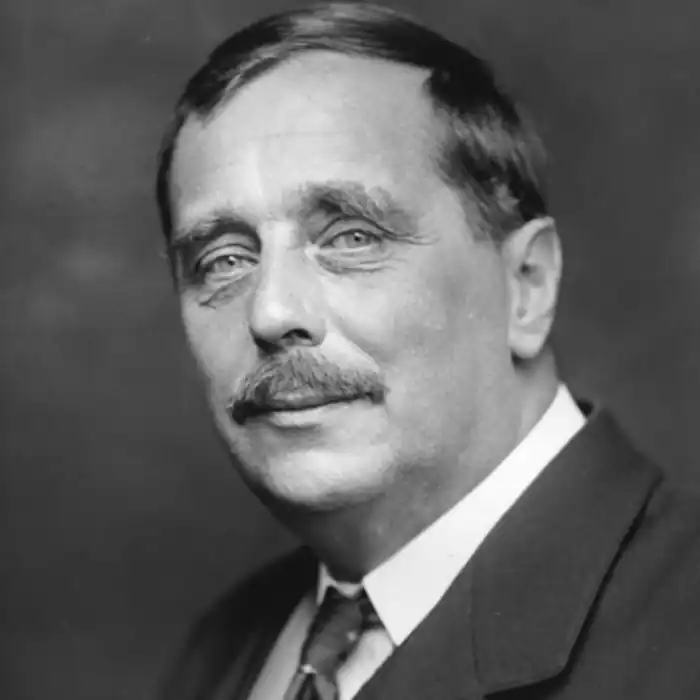

ВЕЛЛС, Герберт Джордж (Wells, Herbert George — 21.09.1866, Бромлі — 13.08. 1946, Лондон) — англійський письменник.Веллс писав про соціальні зрушення і світові катаклізми, про жорстокість війн і колоніальних загарбань, про можливості науки і силу людського розуму. Ще на поч. XX ст. він передбачив велике майбутнє відкриттям, пов'язаним з освоєнням космосу, міжпланетними подорожами, писав про ту роль, яку відіграватиме авіація, про відповідальність учених за наслідки зроблених ними наукових відкриттів. Прийнявши естафету від свого попередника Жуля Верна і в багатьох моментах перегукуючись із ним, Веллс продовжив розвідку майбутнього. Його цікавила передісторія винаходів сучасності, він проектував майбутнє. Центральне місце у творчості Веллса посідає проблема шляхів розвитку науково-технічного прогресу та його впливу на долю людства. Погляди письменника на перспективи розвитку суспільства були песимістичними: він не вважав, що технічні досягнення здатні зробити людей щасливішими.
В. народився неподалік від Лондона, у маленькому містечку Бромлі, в родині дрібного торговця. Його батько був власником крамнички посуду, в якій продавалося також приладдя для гри в крикет. Замолоду він підробляв, беручи участь у змаганнях крикетистів, але після перелому ноги полишив цю справу і став садівником. Утримувати сім'ю йому виявилося не до снаги. Мати майбутнього письменника мусила найнятися економкою у маєток, в якому до свого заміжжя працювала покоївкою. Початкову освіту Веллс здобув у приватній школі в Бромлі, яка, за його власним зізнанням, була вельми схожою на занедбані навчальні заклади, свого часу описані Ч. Діккенсом. На восьмому році життя з Веллсом трапилося таке саме лихо, як і з його батьком: він зламав ногу і тривалий час був прикутий до ліжка. У своїй "Спробі автобіографії" ("Experiment in Autobiography", 1934), написаній на схилі літ, Веллс називає книги, які особливо вразили його дитячу уяву: "Пригоди Артура Гордона Піма" Е. По, "Паризькі таємниці" Е. Сю, а також праці з питань геології та природознавства.
Одразу ж після закінчення школи Веллс став учнем крамаря. Спроба влаштуватися помічником шкільного вчителя попервах не була успішною. Протягом деякого часу він працював у аптеці, уривцем вивчав латину та відвідував середню школу, а згодом знову опинився за прилавком мануфактурної крамниці. Подальші перспективи видавалися невтішними. Двоє його братів з часом почали торгувати мануфактурою, проте Герберта не надто вабила ця справа. Бажання вчитися ставало дедалі сильнішим, а похмура одноманітність провінційного життя пригнічувала. Веллс самостійно підготувався до іспитів, успішно їх склав і отримав посаду помічника вчителя у школі. Свій пристрасний потяг до знань Веллс порівнював із жагою, якою вирізнявся герой роман Т. Гарді — простий каменяр Джуд. Веллс зазначав, що на той час латина була для нього символом "інтелектуальної емансипації". Йому вдалося вирватися із обивательського середовища, яке він згодом майстерно змальовуватиме у багатьох своїх романах ("Історія містера Поллі" та ін.). Здобувши право на стипендію, Веллс став студентом Нормальної школи наук, яка згодом отримала назву Імперіал-коледжу, і вирушив у Лондон. Основною сферою його інтересів були природничі науки. Веллс займався фізіологією, анатомією, біологією; слухав лекції і працював у лабораторії Гекслі, одного з найвидатніших тодішніх учених-фізіологів. Напружене навчання, постійний брак коштів та будь-якої матеріальної підтримки зіпсували здоров'я юнака. 1887 року лікарі виявили у Веллса симптоми туберкульозу. Лікуватися довелося протягом кількох місяців. Постільний режим дозволив Веллсу зануритись в читання. Юнак долучився до великої літератури. Він захоплено читав П.Б. Шеллі й Д. Кітса, Г. Гайне та В. Вітмена, Платона і Г. Спектра, праці утопістів. У цей час Веллс і сам почав писати. 1888 року побачив світ його перший твір — повість "Аргонавти хроносу" ("The Chror.:; Argonauts"), на основі якої Веллс невдовзі створить свій перший роман "Машина часу" ("The Tim Machine", 1895). Веллс також пише нариси, які друкувалися в газетах і згодом склали дві книги — "Вибрані бесіди дядечка" ("Select Conversation; of an Uncle", 1895) та "Про деякі особисті справи" ("Certain Personal Matters", 1897). Одужавши, Веллс продовжив складати університетські іспити і працював шкільним учителем не полишаючи, втім, праці на ниві красного письменства. Літературне визнання він здобув у середині 90-х pp. XIX ст. У 1891 р. письменник одружився зі своєю двоюрідною сестрою, проте цей шлюб виявився невдалим. Натомість зі своєю другою дружиною — Емі Роббінс Веллс зберіг добрі стосунки аж до її смерті в 1927 p., й не раз відверто визнавав себе прибічнику "вільного кохання", шокуючи тим самим шість сучасників, вихованих у вікторіанських традиціях. Упродовж деякого часу (з 1903 р.) в пов'язаний із Фабіанським товариством — соціалреформістською організацією, члени якої вважали своїм завданням вивчення засад соціалізму і визначення шляхів переходу до нього. На позиціях реформізму Веллс перебував протягом усього свого життя, проте стосунки з Фабіанським товариством у 1908 р. припинив. У перший період своєї творчості, тобто до Першої світової війни, Веллс написав науково-фантастичні романи: "Машина часу" ("The Time nine", 1895), "Острів доктора Моро" ("The of Doctor Moreau", 1896), "Невидимець" The Invisible Man", 1897), "Війна світів" ("The of the Worlds", 1898), "Коли сплячий прокидається" ("When the Sleeper Wakes", 1899), "Перші люди на Місяці" ("The First Men in the Moon", 1901), "Їжа богів" ("The Food of Gods", 1904), "Війна у повітрі" ("The War in the Air", 1908) та ін.. Публікацію фантастики супроводжувала поява романів побутового характеру, у яких критики відзначали зв'язок із діккенсівською традицією: "Кохання і містер Льюїшем" ("Love and b Lewisham", 1900), "Kinnc" ("Kipps The Story a Simple Soul", 1905), "Історія містера Полллі" ("The History of Mr. Polly", 1910). У довоєнний період були також створені романи "Тоно-Бенгe" ("Tono-Bungay", 1908), "Анна-Вероніка" ("Ann Veronica", 1909), "Одруження" ("The Marriage", 1912), "Дружина сера Айзека Гармена" ("The Wife of Sir Isaac Harman", 1914). Веллс також звертався до форми роману-трактату ("Новий Мак'явеллі" — "The New Machiavelli", 1911), утопічного роману ("Сучасна Утопія" — "Modern Utopia", 1905), писав оповідання. У своїй фантастиці Веллс розповідає про незвичайні відкриття, пише про можливості підкорити природу силами людського розуму, змальовує картини майбутнього; у побутових романах він описує нудну буденщину, знайомить читачі з колом повсякденних справ та інтересів героїв — найзвичайнісіньких обивателів. Лише деякі з них мріють про вільне і незалежне життя: Анна-Вероніка, герой "Тоно-Бенге" Джордж Пондерво, які намагаються самостійно торували життєвий шлях і прагнуть до знань. Така плановість, поєднання фантастичного і буденного, вигаданого та реального взагалі характерна для творчості Веллса. Письменник не лише показує людину в теперішньому часі, у її буденних ситуаціях, а й розкриває закладені у ній потенційні можливості. На переконання Веллса, цина поєднує в собі, так би мовити, дві сутності: вона велика й могутня за своїми можливостями, але умови життя, нависаючи над нею важким тягарем, не дозволяють їй уповні розкритися, нерідко перетворюючи її у злостиву та нікчемну істоту. Веллс пише про два типи людської особистості: в одному живе дух протесту та пошуку, в іншому — схильність до обивательського спокою та комфорту. "Якщо людину належить зобразити повністю, — зауважує Веллс у романі "Світ Вільяма Кліссольда" ("The World of William Clissold", 1926), — то спочатку її слід подати у співвідношенні до Всесвіту, потім — до історії і лише після цього — у її стосунку до інших людей і всього людства". Це допомагає зрозуміти головні аспекти розв'язання Веллсом проблем взаємовідношення людини і світу: людина та Всесвіт, людина та історія, людина та її соціальне оточення. Кожен з цих аспектів вимагав певної жанрової форми втілення. Саме цим обумовлене звернення письменника до різних модифікацій романного жанру. Фантастика Веллса спрямована в майбутнє, але й пов'язана із сучасною письменникові дійсністю. У "Машині часу "і "Війні світів" постає похмура картина майбутнього, коли наукові відкриття та технічні досягнення обертаються проти людини і людства. У "Машині часу" дія відбувається в дев'ятому тисячолітті нашої ери. Герой здійснює політ крізь час — із сьогодення в будучину. У польоті він уявляє собі людей майбутнього щасливими та радісними. Проте, приземлившись, мандрівник бачить зовсім інше. Люди майбутнього (як і його сучасники) розділені на два табори — елоїв і марлоків. Граціозні, витончені елої живуть на поверхні землі, насолоджуються сонячним світлом, красою природи, вони бавляться і розважаються, а саме в цей час глибоко під землею важко працюють мавпоподібні істоти — марлоки. Непосильна праця згорбила їхні спини, затьмарила розум, підземний морок зробив їх сліпими. Марлоки вже не схожі на людей. Проте й елої теж звиродніли, провадячи беззмістовне існування. Вони перетворилися у беззахисних і нікчемних істот, цілковито залежних від марлоків. Серед ночі марлоки вибираються з-під землі і п'ють кров елоїв. Протиріччя між тими, хто працює, і тими, хто живе працею інших, доведені до краю. У "Війні світів" йдеться про напад марсіан на Землю, на жителів Англії. Марсіани набагато випередили землян у розвитку техніки. Вони першими винайшли міжпланетні кораблі й прибули на Землю. За допомогою руйнівних теплових променів вони знищують міста, ліси, все живе. Просуваючись Землею, вони залишають за собою безживні згарища. Спокійно і планомірно відбувається винищення людства. Марсіани перетворилися завдяки своїм винаходам на вдосконалені машини, споряджені апаратом мислення і надзвичайно розвинутими верхніми кінцівками. Мозок і рука — ось головне у марсіан. У них немає переживань та почуттів, вони працюють 24 години на добу, не потребуючи відпочинку та сну. Вони позбулися статевих відмінностей і розмножуються брунькуванням. Веллс пише про те, що й люди колись теж стануть такими: "Ми з нашими велосипедами, ковзанами, гарматами, рушницями і т.д.